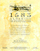
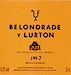
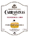
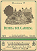
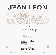
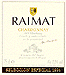

1583 Albariño de Fefiñanes
Bodegas Pazo de Fefiñanes
Cambados (Pontevedra)
D.O. Rias Baixas
Precio: de 1.000 a 2.500 ptas.

Belondrade y Lurton 1997
Bodegas Belondrade y Lurton
Nava del Rey (Valladolid)
D.O. Rueda
Precio: de 1.000 a 1.500 ptas.

Carrasviñas 1999
Bodegas Félix Lorenzo Cachazo, S.L
Pozaldez (Valladolid)
D.O. Rueda
Precio: de 1.000 a 1.500 ptas.

Dehesa del Carrizal 1999
Dehesa del Carrizal
Retuerta de Bullaque (Ciudad Real)
Vino de la Tierra de Castilla
Precio: de 1.500 a 2.500 ptas.

Jean Leon Chardonnay
LJean Leon,S.L.
Penedés
D.O. Penedés
Precio: de 1.500 a 2.500 ptas.

Raimat Chardonnay Selección Especial 1994
Bodegas Raimat
Raimat (Lleida)
D.O. Costers del Segre
Precio: de 1.000 a 1.500 ptas.